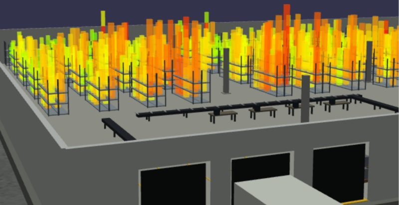
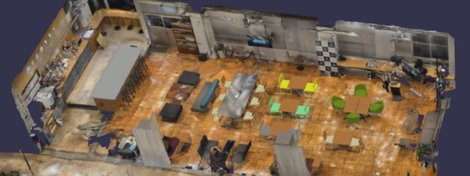
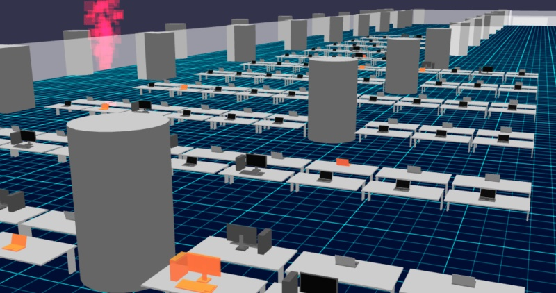
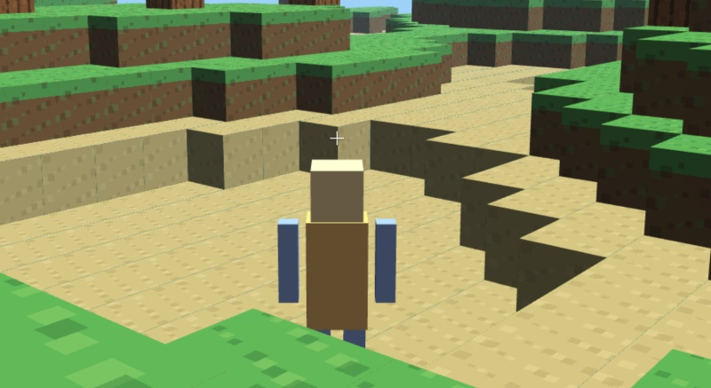
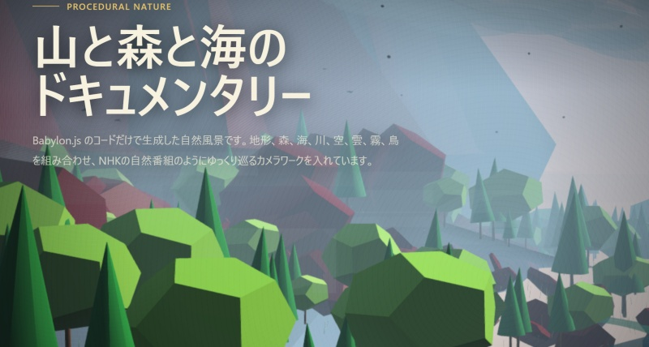
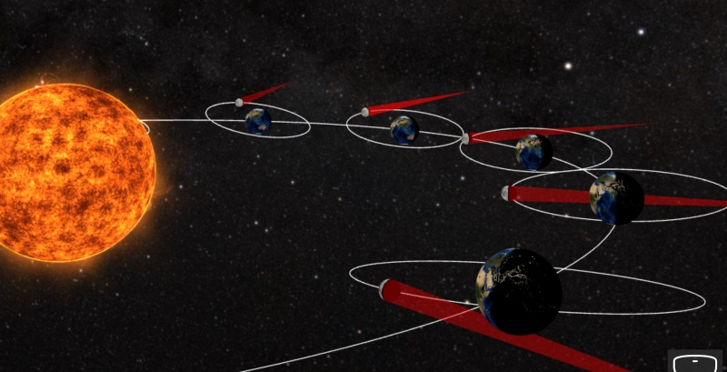

記事・資料
デモ 主にBabylon.js

倉庫サンプル 倉庫内を可視化し、ドローンで確認するサンプル
なごのCanvas 会場 製造業でも生成AI活用したい！名古屋LLM MeetUp 会場の現状復帰用見取り図です
オフィスサンプル オフィス空間の3D表示サンプルです。
Babylon Block World ブロックワールド風の3Dデモ
自然ドキュメンタリー コードだけで作る山・森・海の表現サンプル
日食可視化 月の影の位置関係を可視化するサンプル GIS テスト 地図・位置情報系の表示テストです。 カメラ物体検出 Webカメラを使った物体検出サンプルです。 画像物体検出 画像を使った物体検出サンプルです。 Gradius Style Mini Shooter 横スクロールシューティングのミニゲームです。Gaussian Splatting
Scaniverse
GitHub Pagesの公開URLは通常、https://ykoba079.github.io/test_prj/ になります。